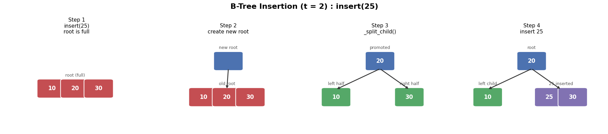

B-Tree Core Algorithms#
This notebook walks through the core algorithms of a B-Tree — a self-balancing search tree widely used in database indexing and file systems (e.g. MySQL InnoDB, SQLite, NTFS).
A B-Tree with minimum degree t satisfies:
Every node holds at most
2t − 1keys and at most2tchildrenEvery non-root node holds at least
t − 1keysAll leaf nodes sit at the same depth
Keys within each node are always sorted
Root is an exception: it may contain as few as 1 key.
Root |
Internal Node |
|
|---|---|---|
Min keys |
1 |
t − 1 |
Max keys |
2t − 1 |
2t − 1 |
Min children |
2 (if internal) |
t |
Max children |
2t |
2t |
Split triggered when |
keys = 2t − 1 |
keys = 2t − 1 |
Borrow possible when |
— |
sibling keys ≥ t |
Merge triggered when |
— |
both siblings have t − 1 keys |
Topics covered:
Node Structure
Search
Insert & Split
Delete
Pseudo-code Summary
Split Visualization
1. Node Structure#
Each B-Tree node stores three fields:
keys— a sorted list of key values in this nodechildren— pointers to child nodes (empty list when leaf)leaf—Trueif this node has no children
Note: In a real database, one node corresponds to one disk block.
class BTreeNode:
def __init__(self, leaf):
self.keys = [] # sorted list of keys in this node
self.children = [] # list of child nodes
self.leaf = leaf # True if this is a leaf node
2. Search#
B-Tree search is an extension of BST search. Because a B-Tree is a generalized BST, the same ordering property holds:
key(left subtree) ≤ key(node) ≤ key(right subtree)
How it works:
Scan the keys in the current node left to right.
If the target key matches a key in this node → return it.
If the current node is a leaf and no match → the key does not exist (
None).Otherwise → recurse into the child whose range contains the target key.
Because each level reduces the search space by a factor of m (number of children), time complexity is O(log n) — far fewer disk reads than a BST.
class BTree:
def __init__(self, t):
self.root = BTreeNode(leaf=True) # start with an empty leaf root
self.t = t
def search(self, x):
"""Public interface: search for key x starting from root."""
return self._search(self.root, x)
def _search(self, node, x):
i = 0
# scan right while x is greater than the current key
while i < len(node.keys) and x > node.keys[i]:
i += 1
if i < len(node.keys) and x == node.keys[i]:
return node.keys[i] # key found
if node.leaf:
return None # reached a leaf — key does not exist
return self._search(node.children[i], x) # recurse into child
3. Insert & Split#
Insertion always ends at a leaf node. On the way down the tree, we proactively split any full node (one with 2t − 1 keys) before descending into it — this guarantees there is always room to insert without backtracking.
insert()#
If the root is full → create a new empty root, make the old root its child, split it, then insert.
Otherwise → call
_insert_non_full()directly.
_insert_non_full()#
If the current node is a leaf → insert the key in sorted position.
If it is an internal node → find the correct child.
If that child is full → split it first, then descend.
_split_child()#
The split operation is the heart of B-Tree insertion:
Before split (t = 2, node full with 3 keys):
parent: [ ... ]
child: [A | M | Z] ← full (2t-1 = 3 keys)
After split:
parent: [ ... M ... ] ← middle key promoted
left: [A] ← left half stays
right: [Z] ← right half moves to new node
Step |
Action |
|---|---|
1 |
Promote |
2 |
New node gets |
3 |
Original child keeps |
4 |
If internal node: also split child pointers |
5 |
Insert new node into parent’s children list |
class BTree(BTree):
def insert(self, key):
"""Insert a new key into the B-Tree."""
root = self.root
if len(root.keys) == 2 * self.t - 1: # root is full — split first
new_root = BTreeNode(False) # new root is not a leaf
new_root.children.append(root) # old root becomes a child
self._split_child(new_root, 0) # split the old root
self.root = new_root
self._insert_non_full(new_root, key)
else:
self._insert_non_full(root, key)
def _insert_non_full(self, node, key):
"""Insert key into a node guaranteed not to be full."""
i = len(node.keys) - 1
if node.leaf: # insert directly into this leaf
node.keys.append(None) # make room
while i >= 0 and key < node.keys[i]:
node.keys[i + 1] = node.keys[i] # shift larger keys right
i -= 1
node.keys[i + 1] = key
else: # internal node — find the correct child
while i >= 0 and key < node.keys[i]:
i -= 1
i += 1
if len(node.children[i].keys) == 2 * self.t - 1: # child is full
self._split_child(node, i) # split before descending
if key > node.keys[i]: # decide which half to enter
i += 1
self._insert_non_full(node.children[i], key)
def _split_child(self, parent, i):
"""Split parent.children[i] (which is full) and promote its middle key."""
t = self.t
child = parent.children[i] # full node to split
new_node = BTreeNode(child.leaf) # new node holds right half
parent.keys.insert(i, child.keys[t - 1]) # promote middle key
new_node.keys = child.keys[t:] # right half -> new node
child.keys = child.keys[:t - 1] # left half stays in child
if not child.leaf: # split child pointers too
new_node.children = child.children[t:]
child.children = child.children[:t]
parent.children.insert(i + 1, new_node)
4. Delete#
Key invariant: after any deletion, every node must still have at least t − 1 keys.
If a node drops below this minimum, it must be fixed immediately.
Three main cases#
Case |
Condition |
Action |
|---|---|---|
Case 1 |
Key is in a leaf node |
Remove directly |
Case 2 |
Key is in an internal node |
Replace with in-order predecessor or successor, then delete that replacement from its leaf |
Case 3 |
Key is not in the current node |
Recurse into the correct child; after recursion, if child underflows → fix it |
Case 2 — choosing a replacement#
Sub-case |
Condition |
Replacement |
|---|---|---|
2-1 |
Left child has ≥ t keys |
Predecessor (largest key in left subtree) |
2-2 |
Right child has ≥ t keys |
Successor (smallest key in right subtree) |
2-3 |
Both children have exactly t−1 keys |
Merge left child + separator key + right child, then delete from merged node |
Fixing an underflowing child (_fill)#
Condition |
Action |
|---|---|
Left sibling has ≥ t keys |
Borrow from left (rotate through parent) |
Right sibling has ≥ t keys |
Borrow from right (rotate through parent) |
Both siblings have t−1 keys |
Merge with one sibling + pull down parent separator |
Root becomes empty after merge |
Only child becomes the new root (tree height shrinks) |
Scope note: This implementation covers Cases 1, 2, and 3 with full borrow/merge logic. Re-balancing of ancestors beyond the immediate parent is handled by the recursion unwinding.
class BTree(BTree):
def delete(self, key):
"""Delete a key from the B-Tree."""
self._delete(self.root, key)
if len(self.root.keys) == 0 and not self.root.leaf:
self.root = self.root.children[0] # tree height shrinks by 1
def _delete(self, node, key):
t = self.t
i = 0
while i < len(node.keys) and key > node.keys[i]:
i += 1
# ── Case A: key is in this node ──────────────────────────────────────
if i < len(node.keys) and node.keys[i] == key:
if node.leaf: # Case 1: leaf — just remove
node.keys.pop(i)
else: # Case 2: internal node
self._delete_internal(node, key, i)
# ── Case B: key is NOT in this node ──────────────────────────────────
else:
if node.leaf:
print(f"{key} not found")
return
child = node.children[i]
self._delete(child, key) # recurse into correct child
if len(child.keys) < t - 1: # child underflowed — fix it
self._fill(node, i)
def _delete_internal(self, node, key, index):
"""Delete a key from an internal node using predecessor / successor / merge."""
t = self.t
left = node.children[index]
right = node.children[index + 1]
if len(left.keys) >= t: # Case 2-1: borrow predecessor from left subtree
pred = self._get_predecessor(left)
node.keys[index] = pred
self._delete(left, pred)
elif len(right.keys) >= t: # Case 2-2: borrow successor from right subtree
succ = self._get_successor(right)
node.keys[index] = succ
self._delete(right, succ)
else: # Case 2-3: both children minimal — merge
self._merge(node, index)
self._delete(left, key)
def _get_predecessor(self, node):
"""Largest key in the left subtree (rightmost leaf)."""
while not node.leaf:
node = node.children[-1]
return node.keys[-1]
def _get_successor(self, node):
"""Smallest key in the right subtree (leftmost leaf)."""
while not node.leaf:
node = node.children[0]
return node.keys[0]
def _fill(self, parent, index):
"""Fix an underflowing child by borrowing or merging."""
t = self.t
if index > 0 and len(parent.children[index - 1].keys) >= t:
self._borrow_from_prev(parent, index) # left sibling has spare keys
elif index < len(parent.children) - 1 and len(parent.children[index + 1].keys) >= t:
self._borrow_from_next(parent, index) # right sibling has spare keys
else:
if index > 0:
self._merge(parent, index - 1) # merge with left sibling
else:
self._merge(parent, index) # merge with right sibling
def _borrow_from_prev(self, parent, index):
"""Rotate: left sibling → parent → child."""
child = parent.children[index]
sibling = parent.children[index - 1]
child.keys.insert(0, parent.keys[index - 1]) # parent key goes down
if not child.leaf:
child.children.insert(0, sibling.children.pop())
parent.keys[index - 1] = sibling.keys.pop() # sibling's max key goes up
def _borrow_from_next(self, parent, index):
"""Rotate: right sibling → parent → child."""
child = parent.children[index]
sibling = parent.children[index + 1]
child.keys.append(parent.keys[index]) # parent key goes down
if not child.leaf:
child.children.append(sibling.children.pop(0))
parent.keys[index] = sibling.keys.pop(0) # sibling's min key goes up
def _merge(self, parent, index):
"""Merge child + parent separator key + right sibling into one node."""
child = parent.children[index]
sibling = parent.children[index + 1]
child.keys.append(parent.keys.pop(index)) # pull down parent separator
child.keys.extend(sibling.keys)
if not child.leaf:
child.children.extend(sibling.children)
parent.children.pop(index + 1) # remove merged sibling
# ── Utility ──────────────────────────────────────────────────────────────
def print_tree(self, node=None, level=0):
if node is None:
node = self.root
print(f" Level {level}: {node.keys}")
if not node.leaf:
for child in node.children:
self.print_tree(child, level + 1)
5. Pseudo-code Summary#
The pseudo-code below is a condensed, language-agnostic description of each algorithm. Compare it with the Python implementation above to see how each step maps to code.
SEARCH#
B_TREE_SEARCH(node, key):
i = first index where key ≤ node.keys[i]
if i is valid and key == node.keys[i]:
return node.keys[i] // found
if node is a leaf:
return NOT_FOUND // key does not exist
return B_TREE_SEARCH(node.children[i], key) // recurse
INSERT#
B_TREE_INSERT(tree, key):
if root is full (2t-1 keys):
new_root = new empty node
new_root.children = [old root]
SPLIT_CHILD(new_root, 0) // split old root
tree.root = new_root
INSERT_NON_FULL(tree.root, key)
INSERT_NON_FULL(node, key):
if node is a leaf:
insert key in sorted order // base case
else:
i = index of child to descend into
if child[i] is full:
SPLIT_CHILD(node, i) // proactive split
if key > node.keys[i]: i += 1
INSERT_NON_FULL(node.children[i], key)
SPLIT_CHILD(parent, i):
child = parent.children[i] // full node
new_node = new node (same leaf status)
promote child.keys[t-1] → parent.keys
new_node.keys = child.keys[t:] // right half
child.keys = child.keys[:t-1] // left half
if not leaf:
new_node.children = child.children[t:]
child.children = child.children[:t]
insert new_node into parent.children at i+1
DELETE#
B_TREE_DELETE(tree, key):
DELETE_FROM_NODE(tree.root, key)
if root is empty and has a child:
tree.root = root.children[0] // shrink height
DELETE_FROM_NODE(node, key):
i = position of key in node.keys (or insertion point)
if key found in node:
if leaf: remove directly // Case 1
else: DELETE_INTERNAL_KEY(node, key, i) // Case 2
else:
if leaf: print "not found"; return // Case 3a
child = node.children[i]
DELETE_FROM_NODE(child, key) // Case 3b
if len(child.keys) < t-1:
FILL_CHILD(node, i) // fix underflow
DELETE_INTERNAL_KEY(node, key, i):
left = node.children[i]
right = node.children[i+1]
if len(left.keys) ≥ t: replace key with predecessor; delete predecessor from left // 2-1
elif len(right.keys) ≥ t: replace key with successor; delete successor from right // 2-2
else: MERGE(node, i); DELETE_FROM_NODE(left, key) // 2-3
FILL_CHILD(parent, i):
if left sibling has ≥ t keys: BORROW_FROM_PREV(parent, i)
elif right sibling has ≥ t keys: BORROW_FROM_NEXT(parent, i)
else:
if i > 0: MERGE(parent, i-1)
else: MERGE(parent, i)
6. Split Visualization#
The cell below uses matplotlib to animate the split process step by step.
We start with a full leaf node [10, 20, 30] (t = 2, so max keys = 3).
Inserting key 25 triggers a split:
Middle key
20is promoted to the parentLeft node keeps
[10], right node gets[30]Key
25is then inserted into the correct half
Run the cell to see each stage rendered as a diagram.
import matplotlib.pyplot as plt
import matplotlib.patches as patches
NODE_H = 0.18
KEY_W = 0.16
def draw_node(ax, keys, x, y, color="#4C72B0", label=None):
width = max(len(keys), 1) * KEY_W
if len(keys) == 0:
rect = patches.FancyBboxPatch(
(x, y),
KEY_W,
NODE_H,
boxstyle="round,pad=0.02",
linewidth=1.5,
edgecolor="white",
facecolor=color,
)
ax.add_patch(rect)
else:
for i, key in enumerate(keys):
rect = patches.FancyBboxPatch(
(x + i * KEY_W, y),
KEY_W,
NODE_H,
boxstyle="round,pad=0.02",
linewidth=1.5,
edgecolor="white",
facecolor=color,
)
ax.add_patch(rect)
ax.text(
x + i * KEY_W + KEY_W / 2,
y + NODE_H / 2,
str(key),
ha="center",
va="center",
fontsize=12,
fontweight="bold",
color="white",
)
if label:
ax.text(
x + width / 2,
y + NODE_H + 0.05,
label,
ha="center",
fontsize=9,
color="#555",
)
return width
def connect(ax, parent_x, parent_y, parent_keys,
child_x, child_y, child_keys):
parent_w = max(len(parent_keys), 1) * KEY_W
child_w = max(len(child_keys), 1) * KEY_W
ax.annotate(
"",
xy=(child_x + child_w / 2, child_y + NODE_H),
xytext=(parent_x + parent_w / 2, parent_y),
arrowprops=dict(
arrowstyle="->",
lw=1.8,
color="#333",
),
)
fig, axes = plt.subplots(1, 4, figsize=(18, 4))
fig.suptitle(
"B-Tree Insertion (t = 2) : insert(25)",
fontsize=16,
fontweight="bold",
)
# --------------------------------------------------
# STEP 1
# --------------------------------------------------
ax = axes[0]
ax.set_title(
"Step 1\ninsert(25)\nroot is full",
fontsize=11,
)
draw_node(
ax,
[10, 20, 30],
0.25,
0.40,
color="#C44E52",
label="root (full)",
)
# --------------------------------------------------
# STEP 2
# --------------------------------------------------
ax = axes[1]
ax.set_title(
"Step 2\ncreate new root",
fontsize=11,
)
root_x = 0.42
root_y = 0.72
child_x = 0.25
child_y = 0.30
draw_node(
ax,
[],
root_x,
root_y,
color="#4C72B0",
label="new root",
)
draw_node(
ax,
[10, 20, 30],
child_x,
child_y,
color="#C44E52",
label="old root",
)
connect(
ax,
root_x,
root_y,
[],
child_x,
child_y,
[10, 20, 30],
)
# --------------------------------------------------
# STEP 3
# --------------------------------------------------
ax = axes[2]
ax.set_title(
"Step 3\n_split_child()",
fontsize=11,
)
parent_x = 0.42
parent_y = 0.72
left_x = 0.12
left_y = 0.30
right_x = 0.62
right_y = 0.30
draw_node(
ax,
[20],
parent_x,
parent_y,
color="#4C72B0",
label="promoted",
)
draw_node(
ax,
[10],
left_x,
left_y,
color="#55A868",
label="left half",
)
draw_node(
ax,
[30],
right_x,
right_y,
color="#55A868",
label="right half",
)
connect(
ax,
parent_x,
parent_y,
[20],
left_x,
left_y,
[10],
)
connect(
ax,
parent_x,
parent_y,
[20],
right_x,
right_y,
[30],
)
# --------------------------------------------------
# STEP 4
# --------------------------------------------------
ax = axes[3]
ax.set_title(
"Step 4\ninsert 25",
fontsize=11,
)
parent_x = 0.42
parent_y = 0.72
left_x = 0.12
left_y = 0.30
right_x = 0.54
right_y = 0.30
draw_node(
ax,
[20],
parent_x,
parent_y,
color="#4C72B0",
label="root",
)
draw_node(
ax,
[10],
left_x,
left_y,
color="#55A868",
label="left child",
)
draw_node(
ax,
[25, 30],
right_x,
right_y,
color="#8172B2",
label="25 inserted",
)
connect(
ax,
parent_x,
parent_y,
[20],
left_x,
left_y,
[10],
)
connect(
ax,
parent_x,
parent_y,
[20],
right_x,
right_y,
[25, 30],
)
for ax in axes:
ax.set_xlim(0, 1)
ax.set_ylim(0, 1.1)
ax.axis("off")
plt.tight_layout()
plt.show()

7. Step-by-step Delete Example#
We trace two deletions on the tree below (t = 2):
[10]
/ \
[4, 6] [12, 20]
/ | \ / | \
[2,3][5][7,8,9] [11][13,17][30]
Delete 6 — internal node; right child
[7,8,9]has enough keys → use successor 7Delete 30 — leaf node; may trigger restructure
# Build the example tree from scratch
demo = BTree(t=2)
for k in [10, 4, 6, 2, 3, 5, 7, 8, 9, 12, 20, 11, 13, 17, 30]:
demo.insert(k)
print("Initial tree:")
demo.print_tree()
Initial tree:
Level 0: [6, 10]
Level 1: [3]
Level 2: [2]
Level 2: [4, 5]
Level 1: [8]
Level 2: [7]
Level 2: [9]
Level 1: [12, 17]
Level 2: [11]
Level 2: [13]
Level 2: [20, 30]
# Delete 6 — internal node; right child [7,8,9] has enough keys → use successor 7
demo.delete(6)
print("After deleting 6 (replaced by successor 7):")
demo.print_tree()
After deleting 6 (replaced by successor 7):
Level 0: [10]
Level 1: [3, 5, 8]
Level 2: [2]
Level 2: [4]
Level 2: [7]
Level 2: [9]
Level 1: [12, 17]
Level 2: [11]
Level 2: [13]
Level 2: [20, 30]
# Delete 30 — leaf node; after removal right child may underflow → borrow or merge
demo.delete(30)
print("After deleting 30 (leaf; triggers restructure):")
demo.print_tree()
After deleting 30 (leaf; triggers restructure):
Level 0: [10]
Level 1: [3, 5, 8]
Level 2: [2]
Level 2: [4]
Level 2: [7]
Level 2: [9]
Level 1: [12, 17]
Level 2: [11]
Level 2: [13]
Level 2: [20]
8. Library Book Index Demo#
We apply the B-Tree as a university library indexing system.
Each Book ID is the key; the tree provides O(log n) lookup over the entire catalog.
Book ID |
Title |
Category |
Author |
|---|---|---|---|
1023 |
Data Structures |
CS |
Mark Weiss |
2045 |
Deep Learning |
AI |
Ian Goodfellow |
3011 |
Cell Biology |
Biology |
Alberts |
1500 |
Algorithm Design |
CS |
Kleinberg |
2200 |
Neural Networks |
AI |
Haykin |
3500 |
Genetics |
Biology |
Lewin |
1100 |
Operating Systems |
CS |
Tanenbaum |
book_records = {
1023: ("Data Structures", "CS", "Mark Weiss"),
2045: ("Deep Learning", "AI", "Ian Goodfellow"),
3011: ("Cell Biology", "Biology", "Alberts"),
1500: ("Algorithm Design", "CS", "Kleinberg"),
2200: ("Neural Networks", "AI", "Haykin"),
3500: ("Genetics", "Biology", "Lewin"),
1100: ("Operating Systems", "CS", "Tanenbaum"),
}
library = BTree(t=2)
for book_id in book_records:
library.insert(book_id)
print("B-Tree index after inserting all books:")
library.print_tree()
B-Tree index after inserting all books:
Level 0: [2045]
Level 1: [1023, 1100, 1500]
Level 1: [2200, 3011, 3500]
def lookup(book_id):
result = library.search(book_id)
if result is not None:
title, cat, author = book_records[result]
print(f"[FOUND] ID {book_id:4d} | {title:<22} | {cat:<8} | {author}")
else:
print(f"[NOT FOUND] ID {book_id}")
# Search existing and non-existing book
lookup(2045)
lookup(9999)
[FOUND] ID 2045 | Deep Learning | AI | Ian Goodfellow
[NOT FOUND] ID 9999
# Insert a newly acquired book
new_id = 2500
book_records[new_id] = ("Computer Vision", "AI", "Forsyth")
library.insert(new_id)
print(f"After inserting Book ID {new_id}:")
library.print_tree()
After inserting Book ID 2500:
Level 0: [2045, 3011]
Level 1: [1023, 1100, 1500]
Level 1: [2200, 2500]
Level 1: [3500]
# Delete an archived book
del_id = 1500
library.delete(del_id)
book_records.pop(del_id)
print(f"After deleting Book ID {del_id}:")
library.print_tree()
lookup(del_id)
After deleting Book ID 1500:
Level 0: [2045, 3011]
Level 1: [1023, 1100]
Level 1: [2200, 2500]
Level 1: [3500]
[NOT FOUND] ID 1500